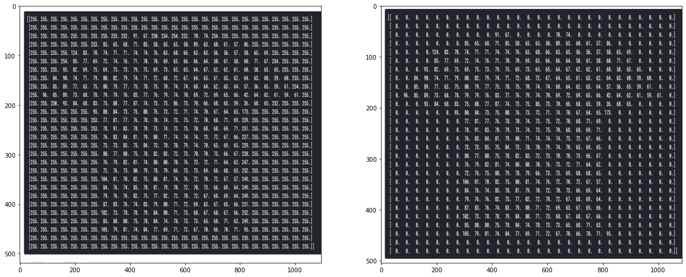
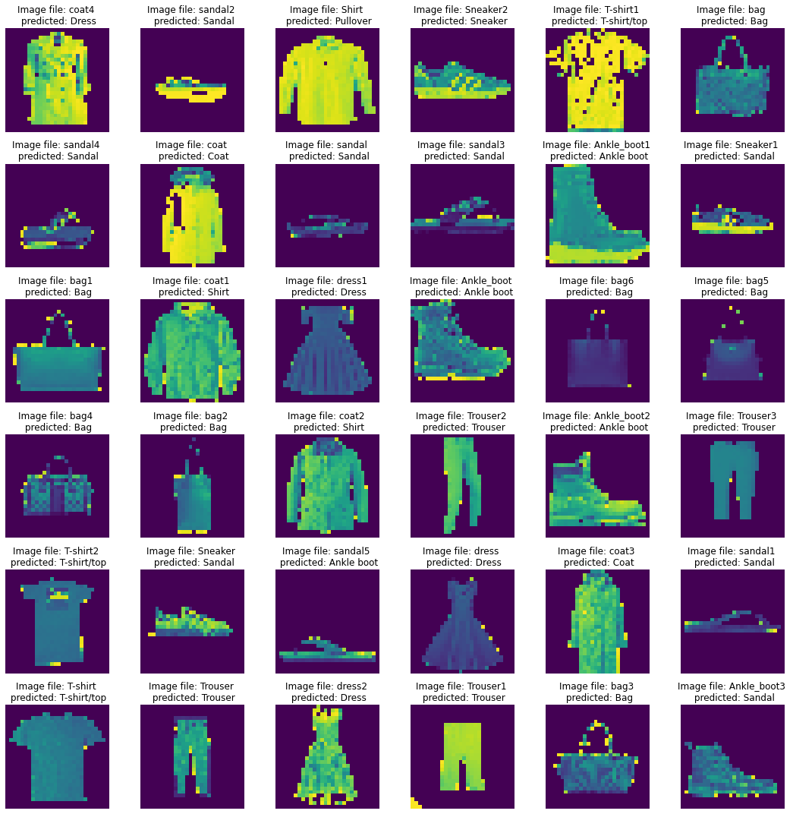
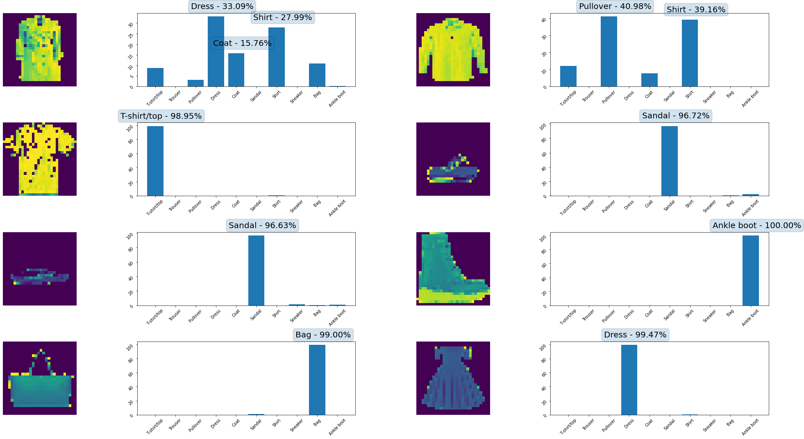

FashionVision uses a convolutional neural network, which is a standard architecture for computer vision, the field of teaching computers to identify images. The program works by first turning the image into a matrix of numbers, representing the pixels that make up the image. This matrix is then sent through a series of convolutional and pooling layers.
Convolutional and pooling layers both work by looking at subsets of the given matrix and giving back an aggregate of those subsets. There are two benefits of looking at aggregates instead of the original matrix. First, looking at smaller datasets improves run time of the model, and second, aggregates capture features of multiple pixels rather than looking at pixels in isolation. Basically, these layers let the computer look at lines and shapes rather than just a series of pixels.
The features captured by the convolutional and pooling layers are then sent through a standard neural network which learns which features indicate that the picture is of a shirt, shoes, dress, etc. This neural network contains nodes that vote on what type of clothing they think the picture is and return the category with the most votes.